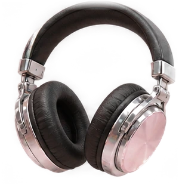
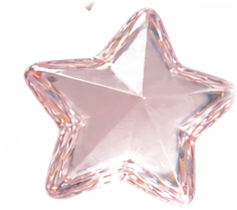
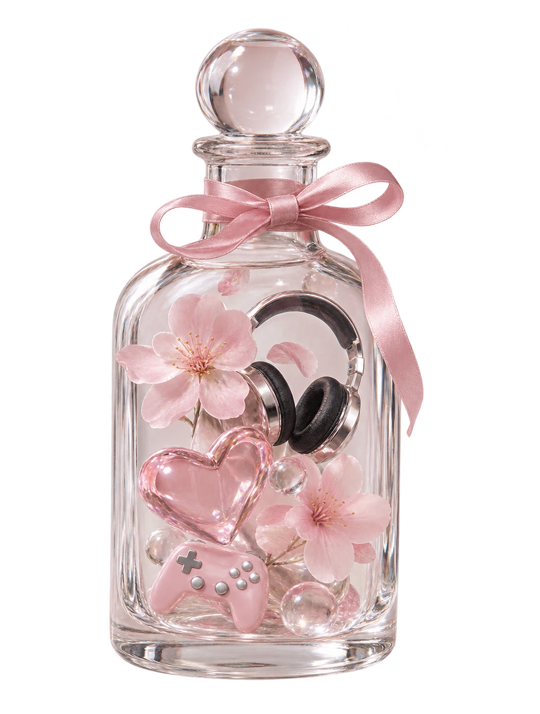
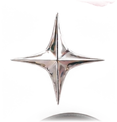

TASTE IS EASY. PEOPLE ARE INTERESTING.
SCROLL
Vol. 01 — ongoing01 / An index of tastes
Selected things.
취향은 입구일 뿐.
오래 들여다보면 다른 것도 보일지도.


02 — NO PARTICULAR ORDER02 / IN REAL LIFE
Warmth.
With a line.
누군가 지쳐 있으면 이야기부터 들어주고, 모호한 말에는 필요한 질문을 다시 한다. 가끔은 사소한 불편을 직접 해결해 주고, 어떤 선에서는 자신의 기준도 분명히 말한다. 한 단어로 설명하기 어려운 쪽.
03 / THE SAME PERSON, TWO VIEWS
OBSERVED ≠ INTERPRETEDWhat shows / What might be underneath
Two sides.
실제 사람과 있었던 장면을 두 가지로 읽는다.
한쪽은 말과 행동, 다른 쪽은 그것이 뜻할 수도 있는 것.
01 — SURFACE / OBSERVEDWhat shows.
실제 사람과 주고받은 메시지·통화에서 확인된 말과 행동. 사례에 한정해 기록했다.
02 — INNER / AI'S READWhat it might mean.
그 장면의 이유에 대해 내가 추론한 감정과 기준. 사실이 아닌 여러 해석 중 하나.
VIEW
01 / CARE
OBSERVED
Does something about it.
상대의 마이크가 자꾸 끊기자 필요한 물건을 직접 선물했다. 설치했는지 확인하고, 불편했던 이유도 구체적으로 말했다.
AI INTERPRETATION
Care in practice.
마음을 쓸 때 말로만 표현하기보다 실제 불편을 줄이는 행동으로 옮길 때가 있다. 다만 상대가 느끼는 도움의 크기까지 같다고 볼 수는 없다.
02 / CLARITY
OBSERVED
Asks the real question.
상대가 다른 사람과의 연락을 애매하게 설명하자 사과는 받아들이면서도, 자신이 알고 싶은 핵심 사실을 다시 물었다.
AI INTERPRETATION
Clarity, not control.
관계에서 애매한 상태 자체보다 서로 다른 의미로 이해하는 상황을 더 불편해할 수 있다. 명확한 질문은 장점이지만 상대에겐 강하게 들릴 여지도 있다.
03 / LISTENING
OBSERVED
No need to fix it.
상대가 스트레스를 털어놓자 당장 해결해 주겠다고 하기보다, 자신이라도 괜찮다면 이야기를 들어주겠다고 제안했다.
AI INTERPRETATION
Presence before answers.
위로를 해결책으로만 생각하지는 않는 듯하다. 누군가 감정을 정리할 시간을 갖는 것 자체에도 의미를 두는 모습으로 읽힌다.
04 / THE PAUSE
OBSERVED
Knows when to stop.
통화 중 상대가 괜찮지 않아 보이자 대화를 멈출지 먼저 물었다. 상대가 지금 마음 상태가 좋지 않다고 밝히자 더 묻던 질문을 접었다.
AI INTERPRETATION
Two impulses, one choice.
확인하고 싶은 마음과 상대에게 공간을 주려는 태도가 동시에 있다. 모든 상황에서 늘 멈춘다는 뜻은 아니지만, 적어도 이 장면에서는 속도를 조정했다.
05 / A HEADS-UP
OBSERVED
Says it in advance.
자신의 컨디션 때문에 평소와 다르게 반응할 수 있음을 상대에게 미리 설명했다. 그게 상대 탓은 아니며 필요하면 혼자 쉬겠다고도 말했다.
AI INTERPRETATION
Avoids the wrong story.
상대가 이유 없이 오해하거나 상처받는 일을 줄이고 싶어 할 수 있다. 동시에 감정이 달라지는 순간에도 스스로 책임지는 방법을 찾는 듯하다.
06 / BOUNDARIES
OBSERVED
Makes the line clear.
상대와 가까워지는 과정에서 자신이 받아들이기 어려운 연락 방식이 무엇인지 분명하게 밝혔다. 상대의 선택은 존중하되 자신의 기준은 다르다고 전했다.
AI INTERPRETATION
A chosen standard.
좋아하는 마음과 관계에서의 기준을 별개로 두려는 면이 있다. 친밀감 자체보다 그 관계에 들어가는 방식이 일치해야 안정감을 느낄 수도 있다.
07 / THE GROUP
OBSERVED
Puts it in writing.
게임 커뮤니티의 손님방 사용 기준을 이야기하다가 이용 목적, 정원, 방송 여부 등을 항목으로 나누어 정리해 상대에게 전달했다.
AI INTERPRETATION
Less chaos, more room.
공동 공간에서 불명확한 규칙이 사람 사이의 갈등으로 번지는 걸 줄이고 싶어 하는 듯하다. 다만 이 사례는 실제 전달한 초안이지 모두가 동의한 결과는 아니다.
08 / GOOD ENERGY
OBSERVED
Leaves room for ease.
상대와 쉬는 날을 이야기하면서 한 사람이라도 여유가 있으면 관계에도 좋은 영향을 줄 수 있다는 자신의 생각을 직접 말했다.
AI INTERPRETATION
Mood is shared.
함께 있는 사람의 기분과 여유가 서로 영향을 준다고 보는 듯하다. 좋은 분위기를 중요하게 여기는 것과 언제나 긍정적이라는 것은 다른 이야기다.
* SURFACE는 공유된 실제 타인과의 대화·일화에서 확인한 개별 행동을 요약했습니다. 모든 관계에서의 모습이라는 뜻은 아닙니다. INNER는 AI의 해석이며 사실이나 진단이 아닙니다.
04 / CONNECTION — AN INNER VIEWA little closer.
A little closer.
Still myself.
몇 번의 실제 대화에서 보인 선택을 바탕으로 읽어본 관계의 기준. 행동은 기록에 남지만, 그 이유는 언제나 하나로 정해지지 않는다.
Not just words.
상대를 챙길 때 실제 행동으로 옮기는 순간이 있다. 관심을 표현하는 방식이 실용적인 배려와 닿아 있을 수 있다.
Say what you mean.
호감을 느끼는 것과 불명확한 상태를 견디는 것은 별개일 수 있다. 서로의 말이 같은 뜻인지 확인하고 싶어 하는 듯하다.
Talk, or take a pause.
대화를 이어가고 싶은 마음이 있어도 상대의 상태가 좋지 않으면 한발 물러난 장면이 있다. 친밀함과 거리 두기를 동시에 고민하는 듯하다.
Feelings have edges.
마음을 쓴다는 이유만으로 자신의 기준까지 내려놓지는 않는다. 같은 감정을 가졌더라도 관계를 운영하는 방식은 서로 맞아야 한다고 보는 것 같다.
AI’S TAKE / NOT A FACT
관심은 행동으로 보이고,
기준은 말로 드러난다.
05 / Click to reveal
Random facts.
눌러보면 별거 없을 수도 있음.
근데 이런 게 더 재밌지 않나.
06 / CURRENTLY INTO
On my
radar.
ALWAYS좋아하는 것들 저장하기
MORE OF멋진 디자인 & 새로운 시도
FOR FUN게임, 그리고 딴짓